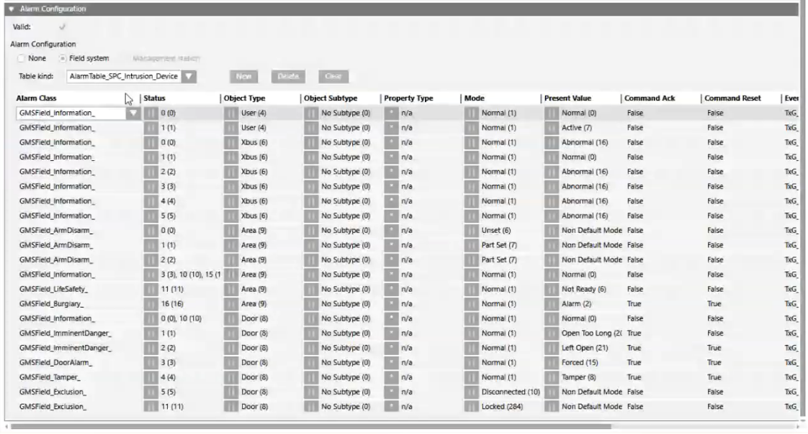

Configure a Customized SPC Alarm Table
This procedure is part of the workflow for customizing SPC alarm tables.
Create a Customized SPC Library
Skip to the next section if the SPC library already exists at your allowed customization level.
- Select Project > System Settings > Libraries > L1-Headquarter > Intrusion > Device > SPC.
- Select the Library Configurator tab.
- Click Customize the entire library to a lower level
 .
. - Click OK.
- The structure of the SPC library is duplicated under the allowed customization level (for example, L4-Project > Intrusion > Device > SPC).
Create a New Alarm Table in the Customized SPC Library
You can create multiple customized alarm tables. Skip this section if the alarm table you want to modify already exists in the customized SPC library.
- Select […] > Libraries > L1-Headquarter > Intrusion > Device > SPC > Alarm Tables > SPC Intrusion Device.
- Click Save as
 .
. - In the Save Object As dialog box, as the destination location, select the Alarm Tables block of the customized SPC library. For example L4-Project > Intrusion > Device > SPC > Alarm Tables.
- Enter a name and description and click OK.
- A copy of the Headquarters SPC alarm table is added under the Alarm Tables block of the customized SPC library.
Modify the Alarm Table in the Customized SPC Library
- Select the alarm table in the customized SPC library. For example […] > Libraries > L4-Project > Intrusion > Device > SPC > Alarm Tables > [customized SPC alarm table].
- In the Object Configurator tab, the SPC alarm table content displays in the Alarm Configuration expander.
- In the alarm table, select the row you want to modify. Use the Object Type/Subtype and Present Value columns to help you locate the SPC field input whose alarming behavior you want to alter. Example: Object Type =
Door, Present Value =Left Open. - In the selected alarm table row you can, for example, do the following:
- In the Alarm Class column, modify the category of the Desigo CC event that will be generated by this SPC input. In general, the alarm classes are mapped to the categories, which in turn correspond to the event lamps of the Summary bar.
Example: For Object Type =Zone, Present Value =Tamper, change the Alarm Class column fromGMS_Field_Tamper_toGMS_Field_Sabotage_ - In the Event column, select True to enable Desigo CC event generation or False to disable it. Example: For Object Type =
MappingGate, Present Value =Active, disable event generation by changing the Event column fromTruetoFalse. - Click Save
 .
.
- The modified alarm table is saved. You can now apply it either to a single SPC point, or to a customized SPC object model.
